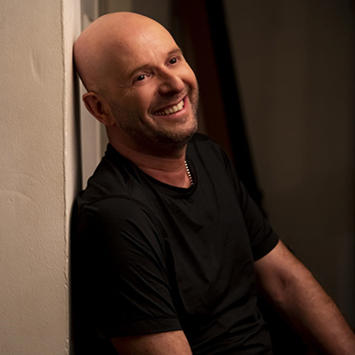

טל פרידמן
Local time:
הקדמה
טל פרידמן (נולד ב-20 בדצמבר 1963) הוא קומיקאי, שחקן, מוזיקאי, תסריטאי, מדבב ומנחה טלוויזיה ישראלי.
מהלך הקריירה
פרידמן נולד וגדל בקריית אתא כבן בכור. הוריו ניצולי שואה שעלו לישראל מצרפת,[1] הם זאב ומיכל פרידמן. לפרידמן שני אחים קטנים התסריטאי יובל פרידמן וד"ר אריאל פרידמן, מרצה לתקשורת במכללת אורנים ובאוניברסיטת תל אביב. פרידמן מאובחן כנוירוטי.
פרידמן למד בבית הספר התיכון "חוגים" שבחיפה. את שירותו הצבאי עשה כלוחם בשייטת ספינות הטילים של חיל הים. לאחר שחרורו מצה"ל, למד משחק בחוג לתיאטרון באוניברסיטת תל אביב, שם הכיר את משה פרסטר ואיתו העלה בשנת 1988 את המופעים הקומיים "עלילות משה בעיר הגדולה" ו"משחק המטקות האחרון". "עלילות משה בעיר הגדולה" זכתה להצלחה גדולה והוצגה מעל ל-700 פעמים.
פרידמן הופיע בתפקידים קומיים גם במספר הצגות תיאטרון כמו "החולמות", "קידוש", "השיעור" ו"תיירות פנים", וגם על המסך הגדול בסרטים "האח של דריקס", "לא יכול", "ריקי ריקי", "מוכרחים להיות שמח", "שושלת שוורץ", "בית"ר פרובנס" ובסרט הטלוויזיה "הללויה".
בנוסף היה פרידמן גם ה"קריין" בסדרת משחקי הטריוויה למחשב "אתה חושב שאתה חכם", ובמקביל אף דיבב סרטים וסדרות מצוירים, ביניהם: הסדרה "נלי הפילה" (לצידה של גיתית שובל), "תפודי וניקי", סדרת הסרטים של "עידן הקרח" בתפקיד סיד העצלן, וכן בסרט "לוני טונס: חוזרים לאקשן" בתפקיד הנבל הראשי (תפקיד שאותו שיחק במקור סטיב מרטין), בשנת 2004 דיבב את עדנה מודה בסרט משפחת סופר על בשנת 2005 דיבב את פנדר בסרט רובוטס בשנת 2018 דיבב בסרטים "אבא אווזה" "הנה בא הגראמפ" ו"משפחת סופר על 2".
הגיש את התוכנית "צפדינה מארחת" בערוץ 2 ומאוחר יותר את תוכנית הסאטירה "שערורייה" בטלוויזיה החינוכית (1997). בשנת 1999 שיחק את דמותו של הכתב יחיאל הרשלג בתוכנית "סיפורי גן חיות" ששודרה בערוץ 2, אולם הפריצה הגדולה שלו הייתה בשנת 1999, בתוכנית הלילה "חלומות בהקיציס" שם הופיע עם שותפו איל קיציס, בערוץ 2, במשך 4 עונות. בתוכנית שיחק פרידמן בכל פרק דמות מוכרת אחרת מההיסטוריה האנושית שהתארחה בתוכנית (ובהמשך גם בתפקידי בעלי חיים שונים), בצורה הזויה ומשעשעת. במקביל החל להגיש יחד עם קיציס את תוכנית הרדיו הלילית "ציפורי לילה שרוטות" בגלי צה"ל. בשנת 2001 הצטרפו פרידמן וקיציס גם לערוץ ביפ, שם כיכבו יחד בתוכנית "לגעת באוכל", אשר היוותה פארודיה על הטלנובלה הישראלית של אז - "לגעת באושר". "לגעת באוכל", שארכה מספר פרקים בודדים באורך דקות ספורות בלבד, שמה דגש על עלילות מוגזמות ומופרכות ועל משחק מלודרמטי עד כדי גיחוך. כמו כן, הקאסט כולו היה מורכב משניהם בלבד ומהשחקנית דידי דוקסין. מאוחר יותר הגישו יחד ב"ביפ" את השעשועון "החטא ועונשו", בו שיחק טל פרידמן את תפקיד אלוהים. נגד תוכנית זו הועלו טענות על בוטות וגסות-יתר.
ב-2003 הצטרף לצוות של תוכנית הסאטירה "ארץ נהדרת", שם חיקה ושיחק מספר דמויות קומיות שהפכו עם השנים לקלאסיקה מקומית: כמו דמותה של "לובה הקופאית", "חלי גונזאלס" (פרודיה על העיתונאית ולימים הפוליטיקאית שלי יחימוביץ'), "אומלטה" (פרודיה על אודטה שוורץ), הרמטכ"ל בוגי יעלון (בעונה 11 גם בתור שר הביטחון), חיים יבין, "חיזקי מדריך הטיולים", וזאת בנוסף לחיקויים של פוליטיקאים כגון: אריאל שרון וטומי לפיד.
פרידמן שיחק בסרטם של שמואל הספרי ואמיר הספרי, "שושלת שוורץ" שיצא לאקרנים בשנת 2005, לצד יהודה לוי ואניה בוקשטיין. באוגוסט 2007 שוב שיתף פעולה עם איל קיציס בתוכנית הידע של ערוץ לוגי "הידוענים", בה גילם את "סוף אלקובי", עוזרת ההפקה השמנמנה והבעייתית של הסדרה, וכן דמויות פיקטיביות המקורבות לידוענים כמו: "גבעונה קרמר הפסיכולוגית", "איש היח"צ נדב זיכרון", "נהג המונית רפי חדש", "סולי הטבח", "אלדד המעריץ" ועוד.
בשנת 2010 שיחק בסרט הקומדיה של חבורת "ארץ נהדרת", "זוהי סדום", בתפקיד אשת לוט.
בשנת 2010 עלתה בערוץ 2 הסדרה המוקומנטרית בכיכובם של קיציס ופרידמן, "מעצר בית".
ב-2011, הוציאה לשכת הפרסום הממשלתית סדרת פרסומות בטלוויזיה לעידוד הפחתת זיהום הסביבה בכיכובו של פרידמן. בהמשך אותה שנה החל להגיש בערוץ 8 את התוכנית "גיבורי גיטרה", כחלק מרצועת שידור של הערוץ בנושא מוזיקת רוק. התוכנית שבה לעונה נוספת בסוף אותה שנה, כחלק מרצועת "הינשופים" בערוץ תחת השם "ינשופי גיבורי גיטרה". במקביל שודרה בערוץ 2 סדרה מוקומנטרית נוספת של קיציס ופרידמן, בשם "גם אנחנו רוצים תוכנית תחקירים". ב-2011 השתתף בסרט הסטודנטים "מורעלים" והצטלם לסרטו של נוני גפן "לא בתל אביב".
מאז 2012 עד 2021 פרידמן השתתף בקמפיינים המונפשים של "ביטוח ישיר", בהפקת חברת באומן בר ריבנאי, שבהן הוא דיבב את יוניאל היונה לצד חברו ל"ארץ נהדרת" אלי פיניש.[2] באפריל 2013 החל להריץ את מופע הסטנד-אפ שלו "ברגוע", אותו כתב יחד עם שחר איינבינדר וחורחן.
ב-29 באפריל 2014 הודיע פרידמן כי יפרוש מ"ארץ נהדרת" בתום העונה הנוכחית שלה, וזאת לאחר 11 עונות.[3] בנובמבר באותה שנה החל להשתתף בתוכנית "הכל הולך" לצד מולי שולמן, אליאנה תדהר, קרן מור, שחר חסון ועוד.
בשנת 2015 כיכב בסדרת הטלוויזיה "אטלנטיקה" בהוט, בה הוא גילם מדריך טיולים הנכנס לעולם האמרגנות לאחר שפגש את "אטלנטיקה", להקת רוק ירושלמית מדשדשת. בשנה זו החל גם להנחות בטלוויזיה החינוכית את תוכנית ההומור לילדים "כאן ואומן", העוסקת באמנות. באותה שנה הגיש ברדיו תל אביב את תוכנית הספיישל "משינה: 30 השנים הראשונות", בה דורגו 25 השירים האהובים ביותר של להקת משינה. החל מקיץ 2015 פרידמן הוא גם הפרזנטור של חברת הצבע "נירלט".
ב-2016 הנחה בערוץ 10 תוכנית בידור ואירוח משלו בשם "הכל אבוד עם טל פרידמן". באותה שנה, פרידמן חזר לתפקיד אורח (של נשיא ארצות הברית הטרי דונלד טראמפ) בעונתה ה-14 של "ארץ נהדרת". ב-2017 יצר את הסדרה הדוקומנטרית "להיות אבא", המספרת על חייו בתור הורה, אשר שודרה בערוץ 10. בתחילת 2017 הגיש פרידמן לסירוגין את תוכנית הרדיו "פרס ישראל" ברדיו תל אביב לצד ארז טל. באותה שנה, הוא הצטרף לתוכנית "מועדון לילה", במסגרתה גילם דמויות פיקטיביות וחיקויים פרועים.
ב-2018 דיבב את הדמות הראשית בסרט האנימציה הממוחשבת "אבא אווזה". באוקטובר אותה שנה עלתה בערוץ 8 סדרת דוקו-אוכל חדשה בת 4 פרקים, "מעורב ישראלי עם טל פרידמן". במסגרת הסדרה, שביימה אילת הלר, פרידמן יוצא למסע במרחב ובזמן בעקבות המטבח הישראלי.[4]
ב-2019 גילם את תפקיד סוכן המוסד אהרון רחמים בסרטו של אלון גור אריה "המוסד", שבמהלכו הופך פרידמן לאהרון מן, גיבור-על ישראלי. פרידמן דובב את דמותו של אהרון מן גם במשחק ה-VR שיצא במקביל לסרט. באותה שנה גילם תפקיד של בכיר במוסד בסדרת הטלוויזיה "דוז פואה" של כאן 11, וכן השתתף בסרט הקומי "המחשמלים" ובסדרה "אבא משתדל", אותה הוא יצר וכתב. בנוסף, באותה שנה שיחק בתפקיד הראשי בגרסה הישראלית למחזמר "רוק בבית הספר".[5]
מאז 2017 גילם תפקידי אורח שונים בתוכנית "מועדון לילה" בעונתה השישית והשביעית.
בשנת 2019 חזר פעם נוספת לתוכנית "ארץ נהדרת", עם תחילת העונה ה-16, למספר תוכניות, בתפקידי אורח. הוא המשיך להופיע בתוכנית בתפקידי אורח עד לאמצע העונה ה-18 ובעונה ה-19 חזר שוב לתוכנית בתפקיד רון חולדאי.
ב-2020 שודר בערוץ כאן 11 סרטו התיעודי "הייתם צריכים להיות שם" שעסק בהומור בשואה.
בשנת 2020 השתתף בתוכנית הריאליטי "הזמר במסכה" של ערוץ 12, בתור הקרמבו, והודח ראשון מהתכנית.[6]
בשנת 2021 השתתף באופן קבוע כפאנליסט באולפן יורו 2020 ברשת 13.
באפריל 2022, לקראת יום העצמאות ה-74 של מדינת ישראל, נבחר להשיא משואה בטקס הדלקת המשואות ביום העצמאות, אך סירב בטענה כי הוא "מעדיף להישאר בצניעות, מעדיף להיות איש מבוגר כשאקבל את הדבר הזה".[7]
ב-6 בספטמבר 2022 החל פרידמן להגיש את אולפן ליגת האלופות בערוץ הספורט, במקומו של חברו מודי בר-און שנפטר בחודש מאי באותה שנה.
ב-23 באוקטובר 2022 החל פרידמן לשחק בסדרת הילדים "שלי הכובשת" המשודרת בכאן חינוכית לצד חנן סביון, אורי גבריאל, שיפי אלוני, גבי עמרני ועוד. פרידמן שיחק בסדרה את צדיק גלילי.
ככדורגלן
בתחילת 2015 הצטרף פרידמן כשחקן לקבוצת הכדורגל שבבעלות האוהדים הפועל רובי שפירא חיפה, אשר שיחקה בליגה ג' באותה עונה, והוא גם חבר בעמותה המנהלת את הקבוצה.[8] ב-20 במרץ 2015 ערך את הופעת הבכורה, כאשר נכנס כמחליף בדקה ה-77 נגד מכבי נווה שאנן.[9] הוא פרש ממשחק פעיל בתום אותה עונה.
קריירה מוזיקלית
טל פרידמן ומריאנג'לה דמוראטס (טריסטניה)
בנוסף להופעות כקומיקאי טל פרידמן הוא גם מוזיקאי. הוא מנגן בגיטרה חשמלית וכן שר לעיתים. סגנון המוזיקה שלו נע מרוק עד למטאל.
בשנת 2006 הוקמה להקת הרוק "טל פרידמן והקריות" כלהקת קאברים והופיעה במשך כחמש שנים ברחבי הארץ. בשנת 2010 חיממו את אוזי אוסבורן בפסטיבל "אוזפסט" בפארק הירקון בתל אביב ובהמשך אותה שנה הוציאו את השיר "ישן" שהיה פסקול הסדרה "מעצר בית".
בשנת 2011 התחילה פעילות להקת "פרידמן והחתולים השמנים" שעוסקת עד היום בחומרים מקוריים ובעיבודים לשירי רוק ישראליים ולועזיים קלאסיים. ב-2012 הקליטו אלבום בכורה הנושא את השם "החתולים השמנים".
ב-2011 החל פרידמן להגיש את התוכנית "גיבורי גיטרה" כחלק מרצועת שידור של ערוץ 8 בנושא גיבורי גיטרה. במהלך התוכנית נמצאת להקתו של פרידמן על הסט והיא עוסקת בסיפוריהם של הגיטריסטים הגדולים בכל הזמנים. התוכנית שבה לעונה נוספת בסוף אותה שנה תחת השם "ינשופי גיבורי גיטרה", במסגרת רצועת השידור המצליחה "הינשופים" של הערוץ.
באוקטובר 2013 עלתה לשידור בערוץ 24 התוכנית בהגשתו "טל פרידמן והחתולים השמנים מארחים", בה מקדיש פרידמן כל פרק לנושא מוזיקלי אחר הקשור בעיקר במוזיקת הרוק. בתוכנית פרידמן ליווה בלהקתו "החתולים השמנים" ואירח זמרים ואמנים שונים, עמם הוא דן על נושא התוכנית ועם חלקם ביצע שירים.
ביולי 2019 "חימם" את בון ג׳ובי בהופעתו בפארק הירקון.[10]
בשנת 2019 הופיע במסגרת פסטיבל "יערות מנשה" לצד אלה רונן, פלורה, מירב הלינגר, אסף אמדורסקי, אביגיל קובארי, גיל בר הדס, ואחרים.[11]
חייו האישיים
פרידמן נשוי לאיריס ולהם שלושה ילדים, שניים מהם בן ובת מאומצים ממוצא אתיופי[12][13]. בתו המאומצת תמר מאובחנת כאוטיסטית. מתגורר בקריית טבעון.
הוא ידוע בחיבתו לכדורגל ובאהדתו לקבוצת הכדורגל הפועל חיפה.
